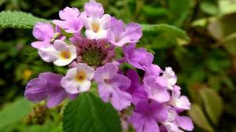

FALSA-MELISSA (Lippia alba)
Visualização 3D
Carregando modelo 3D...
Iniciando...
Gire o modelo com o mouse e use a rodinha para zoom
Sinônimos
- Erva-cidreira brasileira
- Salva-limão
- Alecrim-do-campo
- Chá-de-tabuleiro
- Lantana alba Mill.
- Lippia citrata Willd.
Descrição da Planta
- Porte: Arbusto perene (até 3m de altura)
- Caule:
- Retangular (seção transversal)
- Com cerdas jovens
- Ramificado e arqueado
- Folhas:
- Opostas, ovais com bordas recortadas
- Verdes a verde-acinzentadas
- Superfície estriada e levemente pilosa
- Flores:
- Pequenas, roxas com fundo amarelo
- Inflorescência axilar em forma de capítulo
- Fruto: Drupa arredondada rosa-púrpura
- Aroma: Intensamente perfumada
Para Que Serve
- Usos tradicionais:
- Calmante e relaxante muscular
- Alívio de dores
- Problemas gastrointestinais
- Distúrbios respiratórios
- Atividades comprovadas:
- Ansiolítica e sedativa
- Antimicrobiana e antifúngica
- Antioxidante
- Espasmolítica
- Analgésica
Como Usar
Chá (Infusão)
- 1 colher de sopa de folhas frescas
- 500mL de água fervente
- Picar as folhas e adicionar água
- Tampar e deixar repousar 10 minutos
- Coe antes de beber
Posologia: 4-6 xícaras/dia
Duração máxima: 3 meses contínuos
Outras Preparações
- Compressas
- Banhos
- Xaropes
- Tinturas
Cuidados e Contraindicações
- Contraindicações absolutas:
- Grávidas (risco de aborto)
- Lactantes
- Efeitos adversos:
- Doses altas podem causar:
- Precauções:
- Não ultrapassar a dose recomendada
- Respeitar o tempo máximo de uso
Cultivo
- Clima: Quente ou ameno
- Solo: Rico em matéria orgânica e úmido
- Propagação:
- Estacas de caule (15cm com folhas)
- Enraíza facilmente em água
- Resistência: Poucos problemas com pragas
- Origem: América do Sul (Mata Atlântica)
Curiosidades
- Possui três quimiotipos principais com diferentes composições químicas
- Usada como PANC (Planta Alimentícia Não Convencional) no Nordeste
- Seu óleo essencial é usado em perfumes e cosméticos
- Estudada como repelente natural e agrotóxico biológico
- Mecanismo de ação: Atua no sistema GABAérgico
Composição Química
- Principais componentes:
- Citral (calmante, aromático)
- Linalol (antimicrobiano, hipotensor)
- Mirceno (analgésico, anti-inflamatório)
- Limoneno (antimicrobiano, cicatrizante)
- Carvona (bactericida, fungicida)
- Variações: Composição muda conforme região de cultivo
Referências
- Soares (2001) - UFSC
- Tavares et al. (2005) - Revista Brasileira de Farmacognosia
- Cartilha SUS Campinas (2018)
- Manual CRF-SP (2022)
Monografia Científica
Baixar PDF Completo
Estudo detalhado pela UNICAMP - Departamento de Farmacognosia
Voltar para Catálogo